← Back to Projects
Filters Makeover
Filters are a fundamental building block of the Seemplicity platform. They serve a dual purpose:
- Helping users explore and slice through large volumes of security data.
- Powering the automated processes that drive remediation workflows across the system.
Before
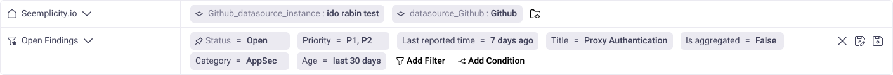
After
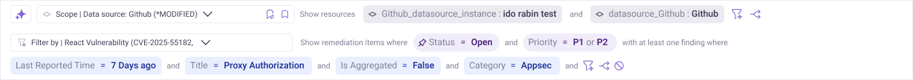
Why we decided to change our filters?
- We introduced a new entity to the system - the Remediation Item - which required its own filtering logic, making it the right moment to rethink our approach to filters holistically.
- Our system supports both single findings and aggregated findings, but the existing filters treated them identically. This created confusion and eroded users' trust in the results they were seeing.
Changes
- Natural language — introduced plain-language labels to clearly communicate the entity hierarchy and help users understand what they're filtering on.
- Distinct visual language for filter chips — differentiated the visual treatment of chips to separate between attributes belonging to different entities, reducing ambiguity.
- Clearer relationships between chips — made the logical operators (AND / OR) between and within chip groups explicit and easy to read at a glance.
- Unified search and menu — streamlined the experience by using a single, consistent search and selection menu across all entity attributes, making the filter panel easier and faster to use.
After
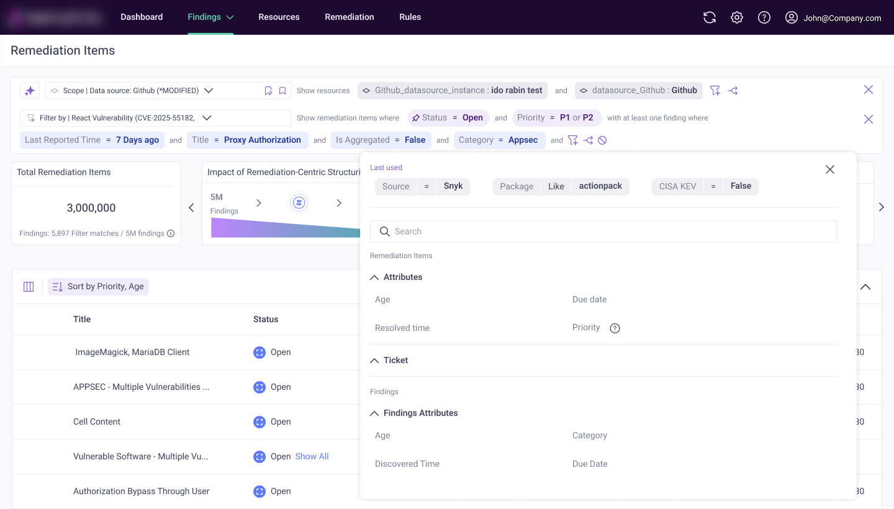
Tradeoffs — experimenting with lots of different ideas
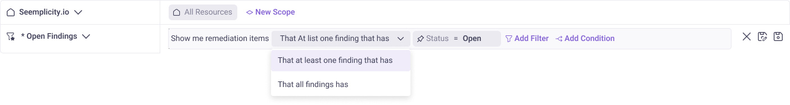
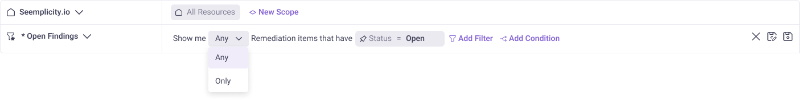
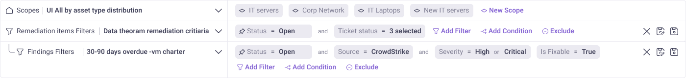
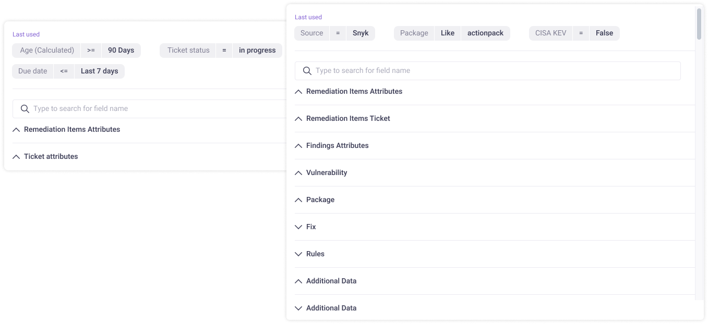
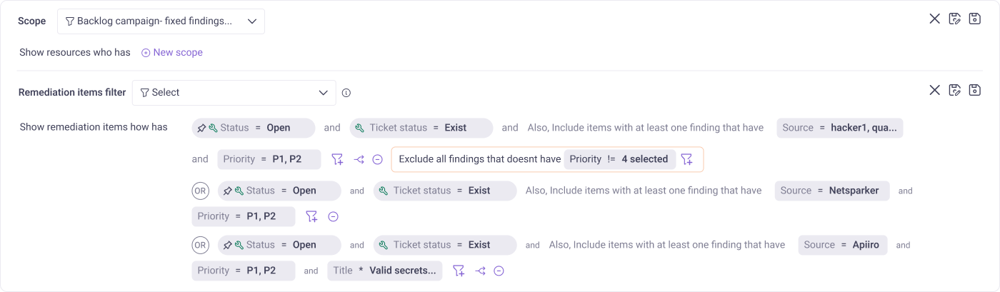
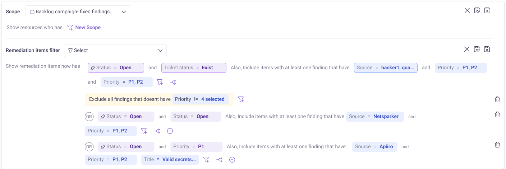
Validation by usability testing
- Leveraged AI-assisted tools to run usability testing sessions efficiently.
- Tested two distinct design directions with customer success teams and design partners to gather comparative feedback.
- This feature is currently in development — adoption and usage patterns will be tracked post-launch through CS conversations and Mixpanel analysis.
Want to see a live Figma prototype?
Explore the interactive prototype →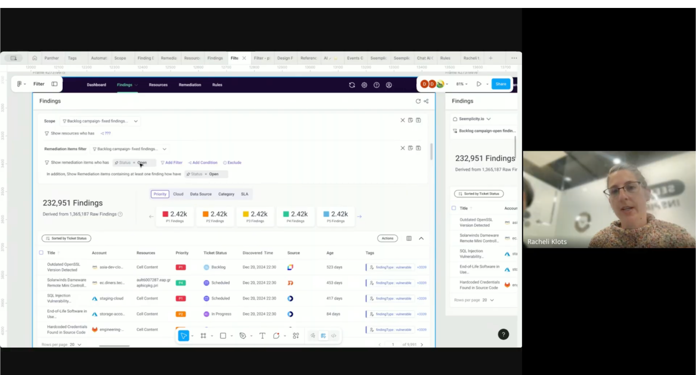
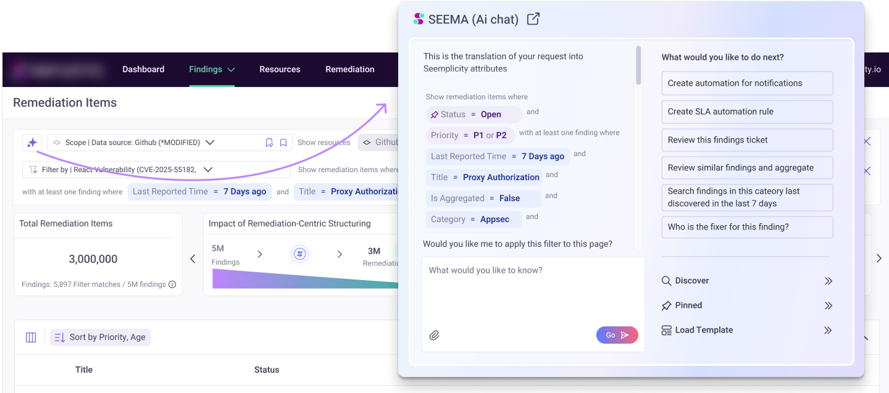
More changes
- Filters preview — users can see a snapshot of results before applying a filter, reducing trial-and-error.
- Exclude attribute — added the ability to negate any filter attribute, giving users finer control over what to omit.
- Out-of-the-box filter library — a curated set of pre-built filters to help users get started quickly without building from scratch.
- Filter tags — users can tag and categorize saved filters for better organization and discoverability.
- Append multiple saved filters — added the ability to combine several saved filters at once, enabling more powerful and reusable filter compositions.
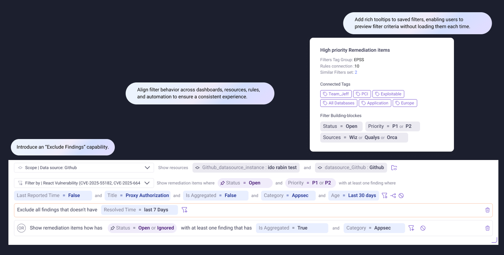
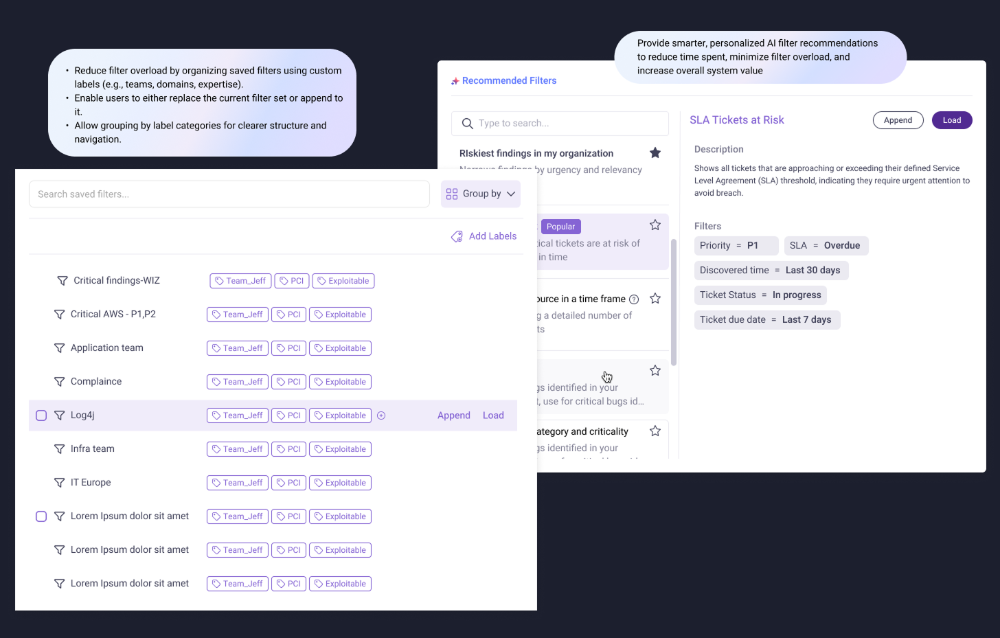